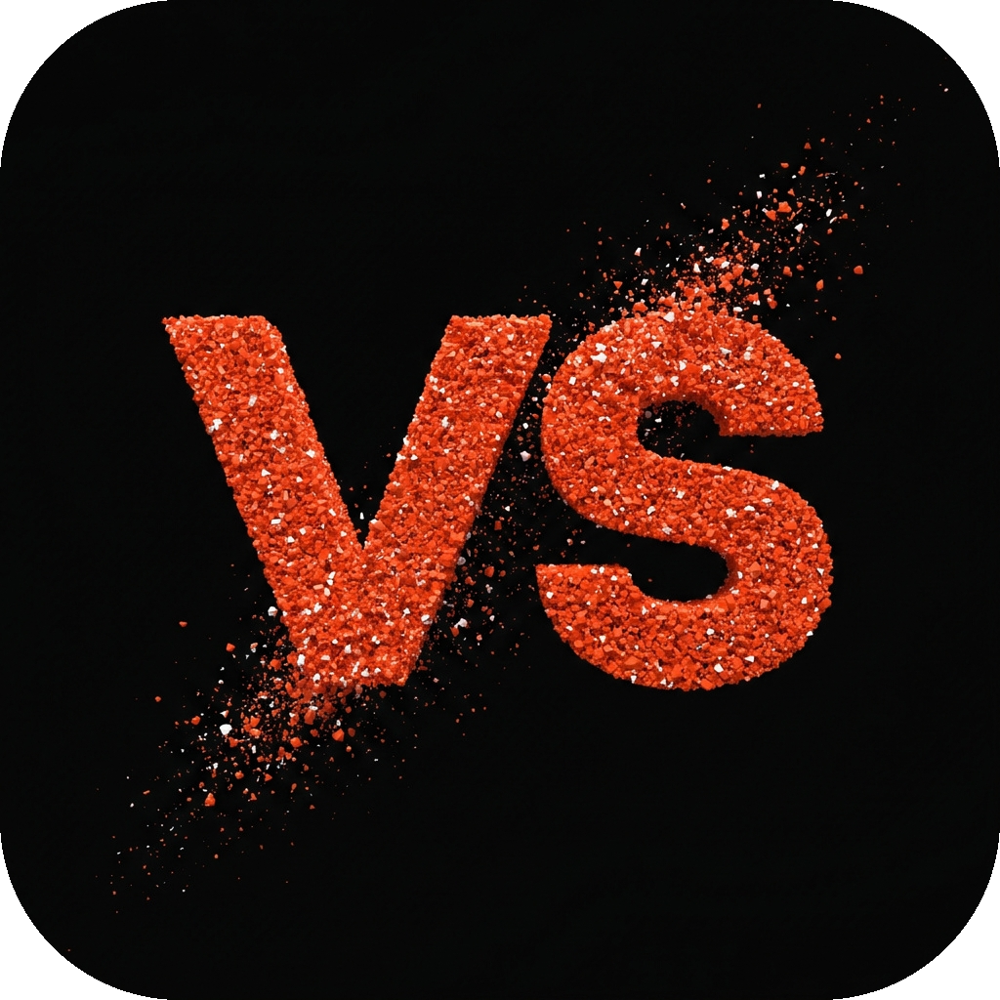

Windows · PySide6 · Unreal Engine 5.5
A photo, a 360 panorama, or a sentence becomes a Gaussian splat for Unreal.
splat.ply with the same rasterizer rule, near plane, and spherical-harmonic degree the splat was trained with, so Unreal shows what the app viewport shows.
This is the 3.0 window at 1600 × 1000 with the real layout and labels. Click the stage tabs, the view chips, the lists, and the Panorama input modes. Buttons only write to the log; nothing runs.

VotionSplat 3.0.1—□✕Best on a desktop browser. Screenshots of the same pages are in the README.
splat.ply.outputs\<scene>\hyworld\splat.ply into the Content Browser of a project that has the plugin. There is no import dialog.The export writes Votion tags into the PLY header: the rasterizer, the near plane, and the spherical-harmonic degree. The plugin reads them and draws the splats with the rule the trainer used. A generic 3DGS plugin can load the same file, but it draws with its own rule and colour handling, so it will not match the app viewport.
The other two export presets are for tools outside Unreal: 3DGS / sRGB (Brush, Postshot, SuperSplat) and Linear Rec.709, tagged for other engines.
Core is about 78 GB. Optional is about 7 GB. SAM 3 ships in the installer. Home downloads the rest.
| Model | Stage | GB | Group |
|---|